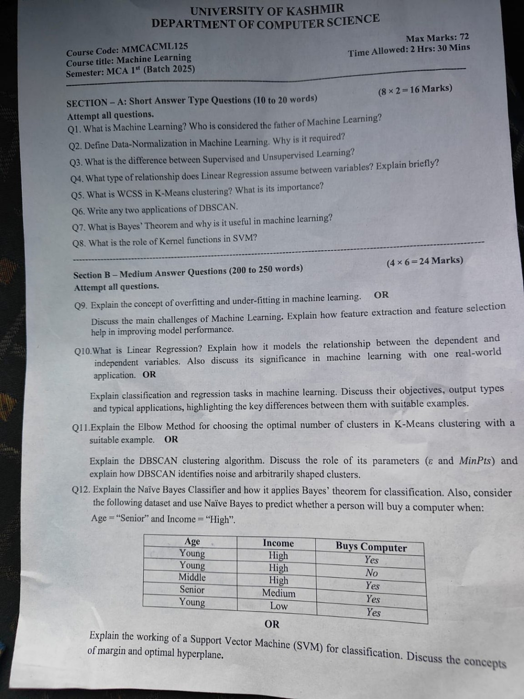
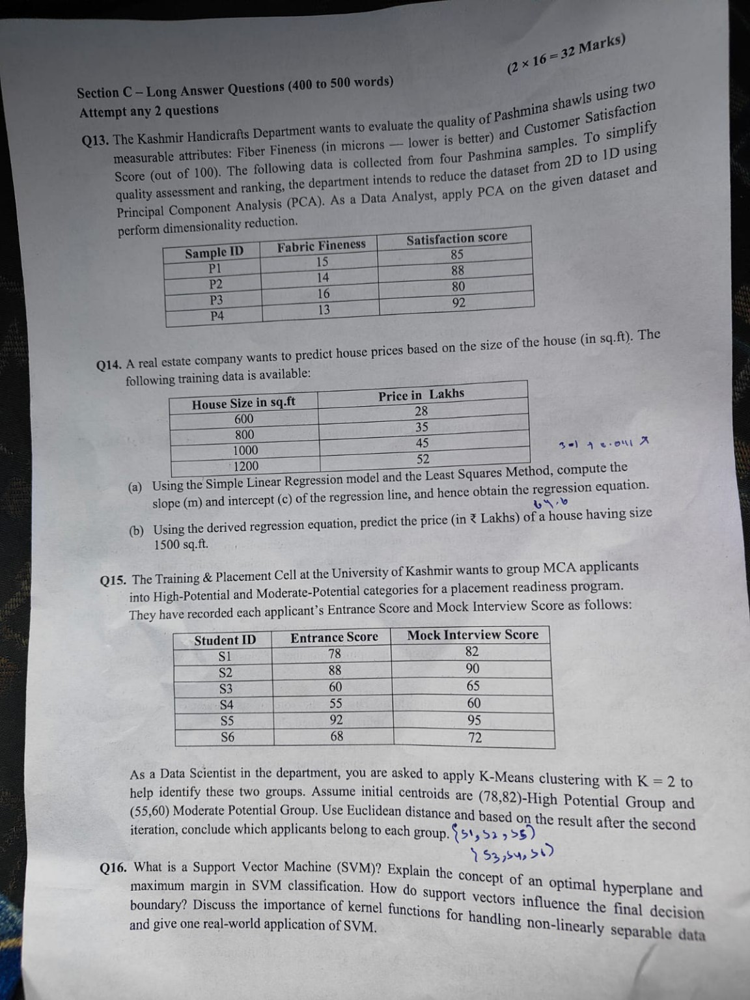
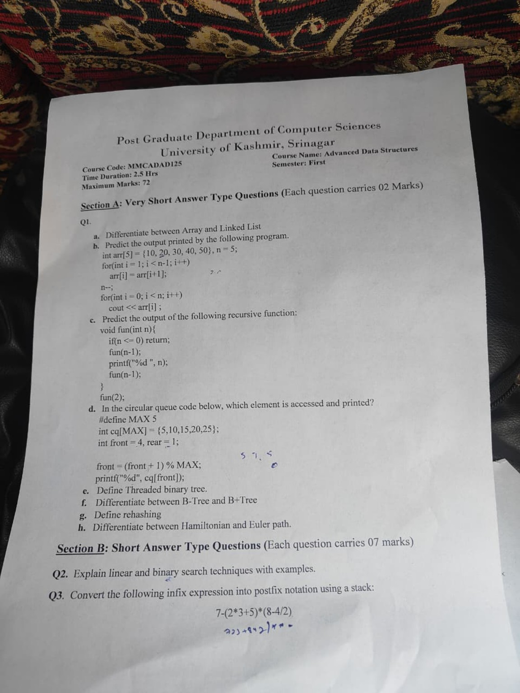
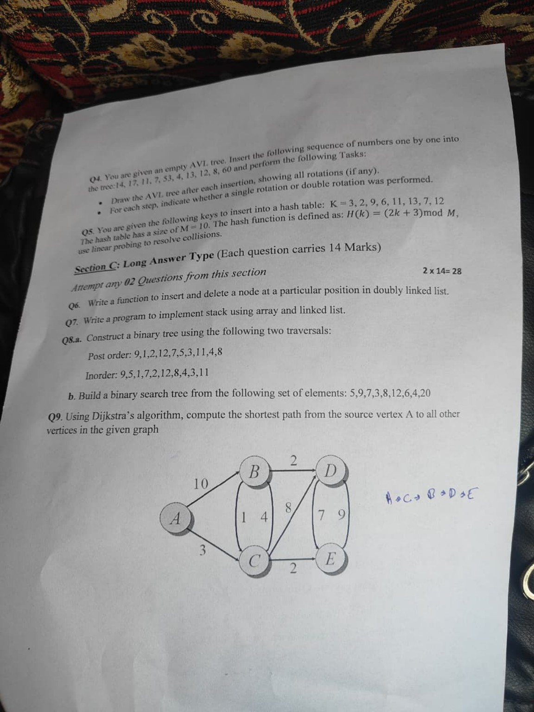
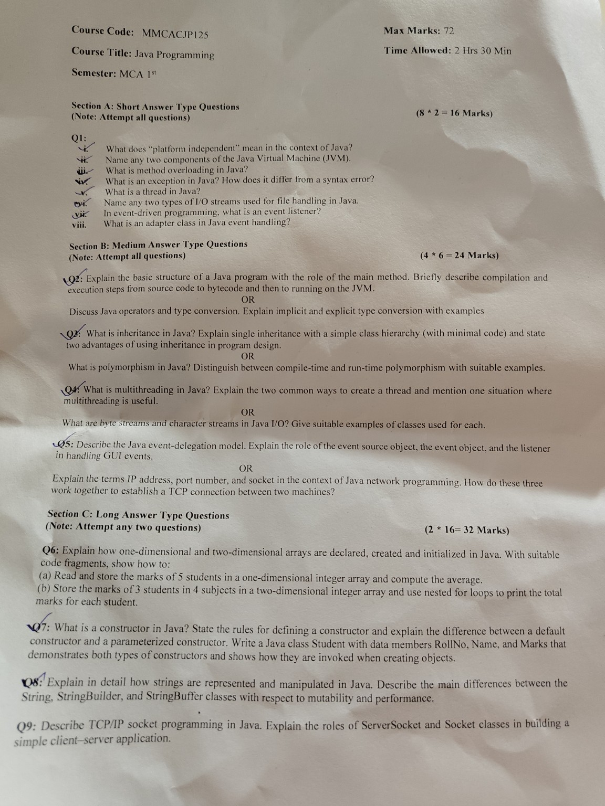

PRACTICE MODE
Old Papers
Subject-wise previous-paper images currently available in the study collection.





Subject-wise previous-paper images currently available in the study collection.




